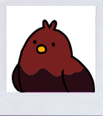
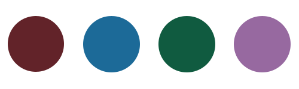
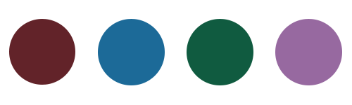

도도한 겨울 딥
#도도한
#김혜수
#가죽 소재

자세한 결과
겨울 딥은 어둡고 진한 플럼, 핏빛레드, 버건디 레드가 잘 어울려요. 뭔가 멋있어 보이는 분위기를 가진 자칭 걸크러쉬분들이 떠오르는 퍼스널 컬러예요.
다크함이 매력인 겨울딥은 낮은 채도 컬러의 포인트 컬러로 얼굴 빛이 살아나요.
옷을 입을 때에는 가죽 소재 옷이나 블랙 & 화이트 룩을 입으면 분위기가 한층 더 살아나고 푸른 버건디나 딥한 핏빛 립이 아주 잘 어울려요.
다크함이 매력인 겨울딥은 낮은 채도 컬러의 포인트 컬러로 얼굴 빛이 살아나요.
옷을 입을 때에는 가죽 소재 옷이나 블랙 & 화이트 룩을 입으면 분위기가 한층 더 살아나고 푸른 버건디나 딥한 핏빛 립이 아주 잘 어울려요.
나와 어울리는 컬러는?


대표적인 연예인
김혜수 디오 이말년